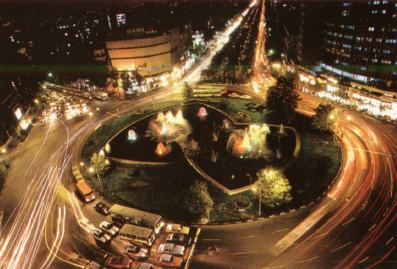
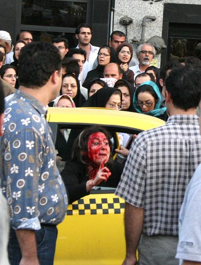

شاید 10 سال پیش، هرگز چنین روزی را متصور نبودیم که کوچکترین حرکت صورت گرفته در شهر در حافظهي وسیلهای به نام تلفن همراه ثبت شود و آنقدر دست در دست بچرخد که در سطح شهر شهرت بیابد و در برخی موارد حتی جهانیان نیز از آن باخبر شوند. اما امروز دیگر چنین تصوری بعید به نظر نمیرسد . توسعهي فنآوری و در دسترس بودن همزمان صدا، تصویر و فیلم، تلفنهای همراه را به وسیلهای تبدیل کرده است که در صورت ضرورت، مطلوبترین رسانهي خبری محسوب میشوند. امروز ما در کل جهان زندگی میکنیم، به شیوهای که برای هر کسی که در بیش از 200 سال پیش زندگی میکرده است ، کاملا غیرقابلتصور میبود. ما از اوضاع و رویدادهای هزاران مایل دورتر آگاهیم و ارتباط الکترونیکی چنین آگاهیای را تقریبا در هر لحظه فراهم میکند. تغییرات در انتشار اطلاعات، و در تکنولوژیهای اطلاعات، همانند هر جنبهي تولید صنعتی، بخشی از توسعهي جوامع امروزی است. در قرن حاضر، حمل و نقل سریع ارتباط الکترونیکی٬ انتشار جهانی اطلاعات را بسیار شدت و سرعت بخشیدهاست.
چرا تلفنهای همراه ؟!
مهرداد اسماعیلی، کارشناس علوم ارتباطات٬ در پاسخ به این سوال میگوید : " شاید به عنوان اولین دلیل بتوان به ویژگیهای یک خبر بازگشت٬ و ویژگی تازه بودن خبر را به خاطر آورد. در واقع در هر لحظه برای هر شخصی در هر گوشهي شهر این امکان وجود دارد که اتفاق نادر و جذابی را ببیند که از این خاصیت خبری برخوردار باشد و تنها در صورت داشتن یک تلفن همراه مجهز که یک رسانهي خوب است میتواند آن خبر را ثبت کرده و منتقل کند ."
از او میپرسم که چرا در ایران٬ بهصورت حرفهای و خبری از این رسانه استفاده نمیشود٬ مثلا یک نمایشگاه خوب که در سطح شهر برپاست و ارزش خبری خود را هم دارد٬ تا این حد در حافظهي تلفنهای همراه ثبت نمیشود؟
"شاید به این خاطر که در کشوری که سانسور در آن تا این حد رواج دارد و خفقان اطلاعاتی و خبری بیداد میکند، مردم دچار حساسیت خاصی شده و خود این عدم پوشش خبری را جبران میکنند تا از این طریق بر نقطهضعفهای حاضر انگشت بگذارند."
نسرین ایمانی، جامعهشناس، نیز 3 دلیل را برای استفاده به این شکل از تلفنهای همراه در فضای سیبرنتیک، دلایلی عمده میداند . او با اشاره به استفادهي روز افزون ایرانیان از فضای سیبرنتیک میگوید : " از نظر کاربران اینترنت در شهر تهران، این فضا بدیل مناسب و تکمیلکنندهای برای فضای شهری است. برای استفاده از فیلمهای گرفتهشده توسط شهروندان از خبرهای سطح شهر و رواج آن در اینترنت نیز 3 دلیل وجود دارد . 1 – محدودیتهای موجود در فضای واقعی 2 – امکان بروز نظرات و عقایدی که در فضای واقعی میتوانند پیامدهای نامطلوبی داشته باشند 3 – عدم نیاز به برنامهریزی مکانی و سهلالوصول بودن امکان استفاده از تلفنهای همراه. "

نیما صالحی، که خود نویسنده است، نیز درباره استفاده تلفن همراه در مواردی که حساسیت خاصی در سطح کشور وجود دارد، نظری مشابه این کارشناس علوم ارتباطات دارد. او که خود میگوید همیشه خودسانسوری را نيز علاوه بر سانسور شدید حاکم تجربه کرده، معتقد است که مثلا در اجرای همین طرح اخیر مبارزه با بدحجابی و مفاسد اجتماعی٬ تلویزیون دولتی در جهت ترویج هژمونی خود٬ مدام جنبههایی از این طرح را که تنها در موافقت با آن است نشان میداد. در نتیجهي این تبلیغات غالب نیز مردم که خود شاهدان عینی و زندهي خبر هستند دستبهکار شدند و همهجا شم پنهان خبر نگاری خود را بهکار انداختند و به ثبت لحظههایی پرداختند که بر خلاف تبلیغ مدام رسانهای است٬ تا خود به پوشش جنبههای منفی این مورد بپردازند و آن خلاء رسانهای را پر کنند .
اما ستاره عابدین، دانشجوی روانشناسی، معتقد است که همهي اینها تنها برای این است که این افراد خودشان دچار همان حس دیگر آزاری هستند و ثبت این لحظهها تنها برای لذت بردن از آنهاست. وقتی به او میگویم که این ادعای بزرگی است٬ او بلافاصله میگوید که چه بسیار دیده است افرادی را که این تصاویر را که عمدتا هم مربوط به فریادهای هیستریک و چهرههای خونآلود زنان در این طرح اخیر بوده است میبینند و مدام قهقهه سر میدهند و از شنیدن این فریادها لذت ميبرند و نیز چه بسیار افرادی را دیدهایم که حتی با خیالی آسوده از صحنه اعدام نیز تصویربرداری کردهاند.
لحظههایی که به شهرت جهانی رسیدند
بخش فارسی سایت بیبیسی اخیرا گزارشی در همینباره منتشر کرد و در آن 2 لحظهي مهم جهانی را یادآوری کرد که طی آن تلفن همراه نقش همان رسانهي در دسترس و مطلوب را در ثبت گزارش خبری بازی کرده و تصاویر ثبت شده به شهرت جهانی رسیدند.
در این گزارش چنین آمدهاست : " استفاده از موبایلها برای ضبط صحنههای مربوط به خبرها و اتفاقات غیرعادی در کشورهای دیگر به امری رایج بدل شدهاست و شبکههای تلویزیونی خبری، از جمله بیبیسی همواره فیلمها یا عکسهای مربوط به وقایع خبری ثبت شده توسط موبایلها را که مخاطبان برای آنها میفرستند، مورد استفاده قرار میدهند. یک نمونهي مشهور از این بهرهبرداری خبری از تصاویر موبایلها، مربوط به بمبگذاریهای لندن در هفتم ژوئیهي سال 2005 بود که تصاویر مربوط به آن از شبکههای مختلف خبری پخش شد. نمونهي اخیر و جنجالبرانگیز دیگر، مربوط به ضبط تصاویر اعدام صدام حسین دیکتاتور سابق عراق بود که به طرز وسیعی در شبکههای خبری مورد استفاده قرار گرفت. "
اما در ایران نیز این تصاویر ثبت شده از لحظهها در برخی موارد به شهرت جهانی رسیدهاند. در مورد اخیر میتوان به فیلمی اشاره کرد که نشاندهندهي برخورد نیروی انتظامی با يك زن در میدان هفت تیر تهران در راستای طرح مبارزه با بدحجابی و صورت خونآلود او بودهاست. مورد دیگر نیز تصاویر ضبط شدهای است که در آنها ماموران پلیس در تهران دختری را که فریاد میزد و کمک میخواست بهزور سوار یک اتومبیل پلیس میکنند. این تصاویر بارها از شبکههای جهانی بیبیسی و سیانان پخش شدهاند . در راستای همین طرح، فیلمهایی نیز از برخورد نیروی انتظامی در شهرستانها با زنان در سطح فضای مجازی به چشم میخورد .

اما پس از دستگیری 32 تن از فعالان زن در مقابل دادگاه انقلاب و در آستانهی 8 مارس شبکهی بیبیسی که مدام به پوشش خبری این موضوع و وضعیت زنان در ایران میپرداخت، برای اولین بار تصاویری را از تجمع 22 خرداد 85 زنان در میدان هفت تیر در راستای تغییرات قانونی نشان داد. گوینده که مدام تاکید میکرد که این تصاویر برای اولین بار است که پخش میشوند، صحنههایی را از تجمع میدان هفت تیر نشان داد که زنان در آن در حال دویدن و فریاد زدن بودند. جالب اینجاست که این فیلم که از دل شلوغیها گرفته شدهبود، از داخل ایران و از یک ایرانی به دست خبرنگار بیبیسی مستقر در ایران، رسیدهبود.
در تجمع روز جهانی زن مربوط به 8 مارس 84 ، در پارک دانشجو نیز فیلمی از خشونت پليس در آن تجمع مسالمتآمیز ثبت شد که این فیلم البته به دلیل رایج نبودن آنچنانی برخی از سایتها نظیر یوتیوب در آنزمان که این تصاویر را به اشتراک جهانی میگذارند، به شهرت جهانی دست نیافت اما در میان کاربران ایرانی گسترش پیدا کرد.
در چند هفتهی اخير نیز شاهد فیلمهایی از برخورد پلیسهاي نقابدار با برخی از مردان و پسران تحت طرحي موسوم به طرح مبارزه با اراذل و اوباش است، بوده ایم که این فیلمها نیز بهطور گستردهای در سایتهایی نظیر یوتیوب وجود دارند، اما بهنظر میرسد از آنجا که موضوع زنان همیشه در جهت منافع داخلی و نیز منافع قدرتهای خارجی مسئلهای مناقشهبرانگیز و حساس بودهاست٬ تنها فيلمهاي مرتبط با مسائل زنان دائما از تلویزیونهای جهانی پخش میشوند. به هر روی به نظر میرسد که این روزها تلفنهای همراه٬ چشم سوم شهر شدهاند!
عکسها برگرفته از:
www.bestirantravel.com
www.synchronica.com
سایت کانون زنان ایرانی